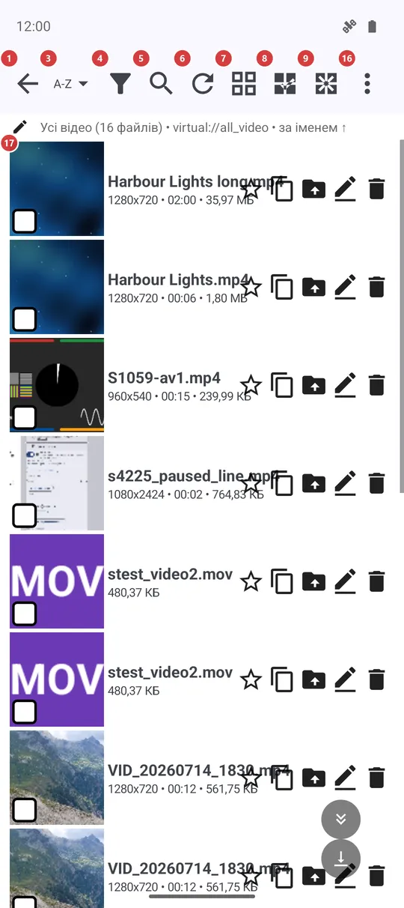
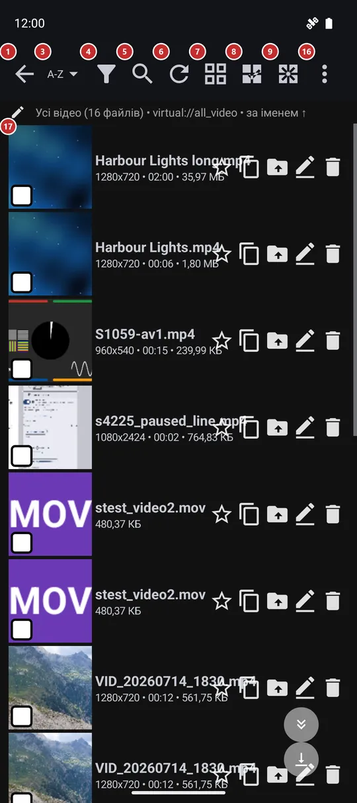

Браузер файлів
Для чого цей екран
Браузер файлів показує вміст одного ресурсу: папки й файли плитками або списком. Тут ви знаходите потрібний файл, сортуєте та фільтруєте папку, виділяєте файли й виконуєте над ними дії або запускаєте відтворення.


Порядок дій
- Натисніть файл у списку 17, щоб відкрити його в плеєрі. Натисніть папку, щоб зайти в неї: назва папки 2 покаже, де ви перебуваєте, а «Назад» 1 піднімає на рівень вище.
- Порядок задає кнопка «Сортування» 3, список звужує «Фільтр» 4, а в «Пошук» 5 можна ввести кілька літер назви. «Оновити» 6 заново перевіряє папку, якщо файли змінилися поза застосунком.
- Кнопка 7 перемикає плитки й список - коли потрібно більше мініатюр або більше подробиць на екрані.
- Натисніть і втримуйте файл, щоб почати виділення, або скористайтеся «Вибрати все» 8. Унизу з’явиться панель дій: «Копіювати» 18, «Перемістити» 19, «Перейменувати» 20, «Видалити» 21, «Поділитися» 23 та «Архів» 24.
- «Скасувати» 22 повертає останнє видалення або переміщення, поки застосунок ще пам’ятає операцію.
- «Відтворити» 15 запускає показ у плеєрі, а «Випадковий» 14 відтворює файли у випадковому порядку.
- «Створити папку» 10, «Створити нотатку» 11, «Створити рисунок» 12 і мікрофон 13 додають нові файли просто тут; усе, що не вмістилося на вузькому екрані, чекає в меню 16 разом із «Довідкою».
Елементи
Навігація та пошук
1НазадПовертає на крок назад: із поточної папки, а з верхньої папки - до списку ресурсів.
Кнопка «Назад» пристрою робить те саме, тож із глибокої папки ви виходите по одному рівню, а не вилітаєте з ресурсу одним натисканням.
2Поточна папкаПоказує папку, у якій ви перебуваєте, і дає змогу перейти в будь-яку папку вище.
Кнопка з’являється, коли ви зайшли в підпапку. Натисніть її, щоб відкрити список папок від ресурсу до поточної, і виберіть будь-яку - ви одразу опинитеся там.
3СортуванняПоказує, як упорядковано файли, і відкриває меню для зміни порядку.
Оберіть назву, дату, розмір або тип; для папки з файлами одного виду є ще виконавець, назва, тривалість або дата зйомки фото. «Випадково» перемішує список, а повторний вибір перемішує ще раз. «Ручний порядок» дає змогу перетягувати файли в потрібному порядку. Порядок запам’ятовується для кожного ресурсу.
4ФільтрЗвужує список за датою, розміром і типом медіа.
Задайте діапазон дат, діапазон розміру в мегабайтах або позначте потрібні типи медіа й застосуйте. Невелике число на кнопці показує, скільки фільтрів увімкнено, а рядок під панеллю - які саме. Фільтр стосується цього ресурсу, а кнопка скидання скасовує його повністю.
5ПошукЗнаходить файл за кількома літерами назви.
На панелі з’являється поле пошуку, і список звужується в міру введення, без повторної перевірки папки. Закрийте поле, щоб знову побачити все.
6ОновитиЗаново перевіряє папку на нові та змінені файли.
Натисніть після копіювання файлів з іншого застосунку чи з комп’ютера, а також якщо мережева папка була недоступна. Потягнувши список донизу, можна зробити те саме.
7Сітка / списокПеремикає папку між сіткою мініатюр і списком.
Сітка показує плитку-картинку для кожного файлу, список - по рядку на файл і більше місця для тексту. Вибір запам’ятовується. Ресурс лише з музикою залишається списком: показувати нічого.
Виділення та нові файли
8Вибрати всеВиділяє всі файли в папці.
Зручно перед копіюванням, переміщенням чи видаленням, коли потрібна вся папка. Почати виділення можна й довгим натисканням на файл, позначаючи файли по одному.
9Зняти вибірЗнімає виділення.
Панель дій унизу при цьому зникає. Натискання на позначену галочку знімає виділення лише з цього файлу.
10Створити папкуДодає підпапку в поточну папку.
Працює на папках пристрою, мережевих папках і хмарних ресурсах. На ресурсі лише для читання кнопку приховано.
11Створити нотаткуПочинає нову текстову нотатку в поточній папці.
Нотатка зберігається, лише коли ви її збережете, і назву запитують саме в цей момент. На ресурсі лише для читання кнопку приховано.
12Створити рисунокВідкриває чистий аркуш редактора малюнків.
Малюнок зберігається просто в поточну папку. На ресурсі лише для читання кнопку приховано.
13Мікрофон: запис аудіоЗаписує голосову нотатку в поточну папку.
Натисніть і тримайте - триває запис, відпустіть - він зупиниться; коротке натискання лише нагадає, що кнопку треба утримувати. Коли запис завершиться, застосунок запитає назву файлу.
Відтворення та меню
14ВипадковийВідтворює файли у випадковому порядку.
Кнопка є, коли в папці лише один вид медіа, наприклад лише фото або лише музика.
15ВідтворитиЗапускає показ у плеєрі.
Він починається з файлу, який ви переглядали останнім у цьому ресурсі, а якщо такого немає - з першого виділеного файлу або з початку списку. Плеєр відкривається в режимі показу й сам переходить до наступного файлу.
16Ще: дії з ресурсомВідкриває меню з усім, чого немає на панелі.
Команди, що не вмістилися на вузькому екрані, переїжджають сюди, тож нічого не зникає. У меню є й дії з ресурсом, наприклад пошук дублікатів, «Налаштування програми» та «Довідка», яка відкриває цю сторінку; клавіша F1 відкриває її теж.
Файли
17ФайлиФайли та папки ресурсу.
Натисніть папку, щоб відкрити її, і файл, щоб переглянути або відтворити. У кожному рядку є зірочка, яка додає файл до обраного, і чотири кнопки, щоб скопіювати, перемістити, перейменувати або видалити саме цей файл; у налаштуваннях їх можна згорнути в меню «три крапки» на рядку. Свайп ліворуч чи праворуч запускає швидку дію, яку обирають у налаштуваннях. Під назвою стоїть другий рядок із найважливішим: у фото це роздільна здатність і дата.
- Скасування
- Видалення спершу запитує підтвердження, а «Скасувати» на панелі дій повертає файли, поки застосунок ще пам’ятає операцію.
Дії над виділеним
18КопіюватиКопіює виділені файли в обране вами місце.
Призначення обирається в діалозі з ваших ресурсів-призначень. Довге копіювання може йти у фоні, поки ви продовжуєте перегляд.
19ПереміститиПереміщує виділені файли в обране вами місце.
Той самий діалог, що й у копіювання. Коли переміщення завершиться, файлів у цій папці не лишиться.
20ПерейменуватиПерейменовує виділений файл.
Працює з одним файлом за раз і відкриває діалог, лише коли виділено рівно один файл.
21ВидалитиВидаляє виділені файли після підтвердження.
Спочатку застосунок просить підтвердити видалення. Одразу після цього «Скасувати» може повернути файли.
- Скасування
- «Скасувати» з’являється на цій самій панелі одразу після видалення чи переміщення.
22СкасуватиПовертає останнє видалення або переміщення.
Кнопка лишається на панелі, поки застосунок ще пам’ятає операцію.
24АрхівПакує виділені файли в один архів.
Кнопка є в ресурсу у власній пам’яті цього пристрою.